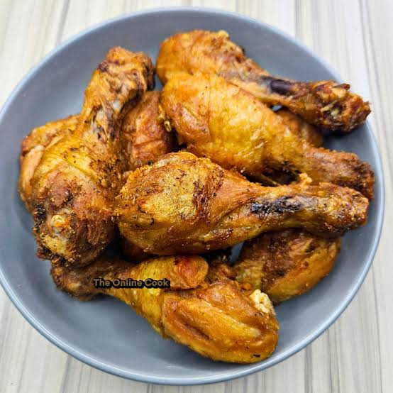

Nigerian Fried Chicken

An image of the Nigerian fried chicken!
Description
Nigerian fried chicken is deeply flavorful, savory, and golden-crisp on the outside while staying moist and succulent inside. Unlike ordinary fried chicken, it is first parboiled and steamed in an intensely seasoned broth of aromatics, peppers, and spices before taking a quick bath in hot vegetable oil.
Ingredients
- 1 kg chicken parts (drumsticks, wings, thighs)
- 1 medium red onion, roughly chopped
- 3 cloves garlic, minced
- 1 thumb ginger, finely grated
- 2 scotch bonnet peppers (ata rodo), crushedr
- 2 bouillon cubes
- 1 tablespoon dried thyme
- 1 tablespoon curry powder
- 1 cup water (for simmering)
- 1 teaspoon salt
- Vegetable oil (for deep frying)
Steps
- Wash the chicken parts thoroughly and transfer them into a clean cooking pot.
- Add the chopped onions, minced garlic, grated ginger, curry powder, dried thyme, crushed scotch bonnet peppers, bouillon cubes, and salt.
- Cover the pot tightly without adding any water and allow the chicken to steam in its own rendered juices over medium heat for 10 minutes.
- Pour in a cup of water, bring the stock to a boil, and simmer gently for an additional 15 minutes until the chicken is tender.
- Transfer the cooked chicken pieces onto a sieve or colander to drain all liquid completely
- Heat vegetable oil in a deep pan or skillet over medium-high heat.
- Gently lower the drained chicken pieces into the hot oil and fry until evenly golden brown and crisp on all sides
- Remove the chicken with a slotted spoon and drain on paper towels or a wire rack before serving.
Odin Recipes